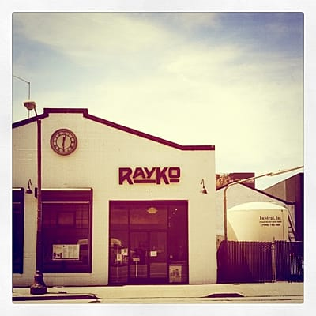

Failures

There are a lot of failures but most of them are minor ones.
There are a lot of failures but most of them are minor ones.

А вот еще супер-штука!

Безумно классная интерактивная книжка для айфона/айпада. Прусь (кажется даже больше Тимы!) в ней совершенно от всего: текста, картинок, от того даже, как чувак ее читает :) Очень, очень классно!
Chandler: Y'know what else I can't believe? I had to kiss Phoebe and Rachel every time I left a room, I mean it's too bad they didn't see us having sex.
Monica: Do you know anything about women?
Chandler: No.
Monica: That's all right.
Chandler: Okay. (They kiss again.)
Надо смотреть конечно же. Это одна из самых прикольных серий :)

А я вот не помню говорил или нет, но это совершенно же офигительный альбом! И он реально такой, как нарисовано на обложке :)
Monica: Ross, how long have you been planning this wedding? Ross: I don't know. A month? Emily has probably been planning it since she was five!
Гениальный сериал :)

Неожиданно :)

Договорился я, в итоге, только с RayKo Photo Center. У остальных или не было больше даркрума, или даркрум этот был для членов клуба, или же я просто не получил ответ. От RayKo ответ мне пришел уже в СФ, когда я не особо и надеялся. Пленок я взял всего несколько, да и те - первые, что попались под руку. Выглядит даркрум так:

И так:

Заплатил я что-то порядка $30 за 2 часа чистого времени в темной комнате (успел напечатать 4 фотки, еще штуки 4 были пробные или просто не получились). Промывка фоток и их сушка выполняется снаружи даркрума и на стоимость не влияет.
Это был очень клевый опыт (до этого я на больших увеличителях не печатал, да и в даркруме был только в своей ванной :). Если поеду еще, то непременно схожу к ним опять!